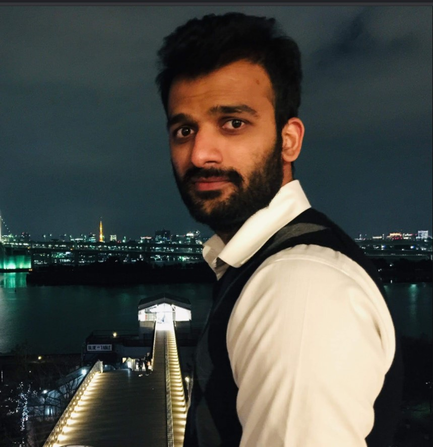

Dr. R Sai Chandra Teja received the B.Tech. Degree in Electronics & Communications Engineering from
Jawaharlal Nehru Technological University Anantapur, Pulivendula, India in 2010, the MTech Degree in
Microelectronics & VLSI from IIT Hyderabad, India, in 2012, and a Ph.D. Degree at Osaka University,
Osaka, Japan in 2020.
In 2016, he joined the Center for Semiconductor Research and Development, Toshiba Corporation, Kawasaki,
Japan, where he was engaged in the research of memory interface. In 2017, he joined Toshiba Memory
Corporation, Kawasaki, where he is engaged in the design and development of firmware/controllers for SSD
drives. In 2019, Toshiba Memory Corporation being rebranded as KIOXIA Corporation, he continued to work
on solid-state drive reliability and machine learning algorithm strategies for nonvolatile storage
technologies. Dr. Teja has 10 international conferences and journal publications.